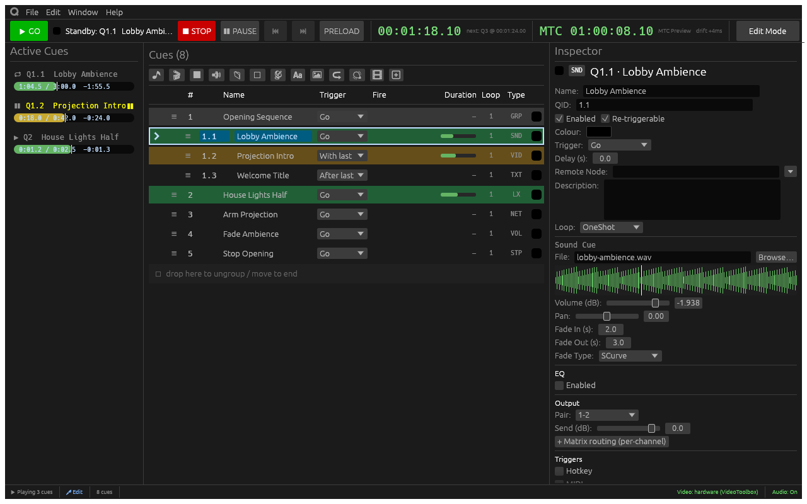

CuePool
A cue player for live shows. Sound, video and lighting cues run from one list, with projection mapping, DMX over sACN and Art-Net, and OSC, MIDI and timecode for show control. I build it with scroix, and it runs the Longreach gallery listed below.